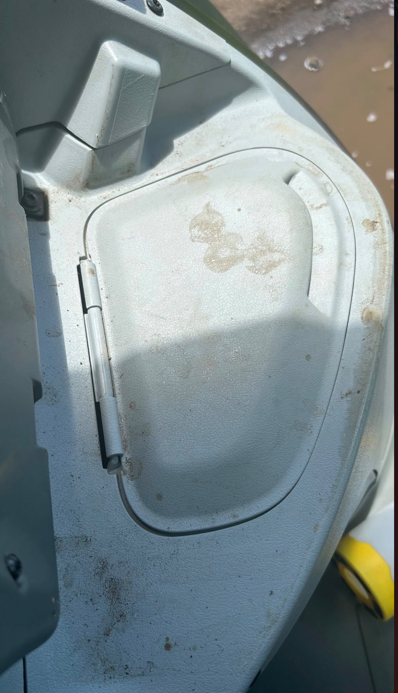
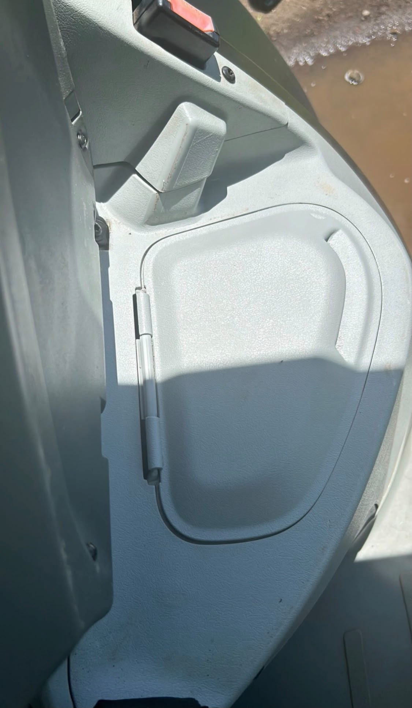

Lavagem automóvel e detalhe
O teu carro
foi feito para
brilhar.
Limpeza automóvel e cuidados de detalhe, com atenção a cada superfície.
O vídeo está temporariamente indisponível.
Sobre a BC Lavagens
Cuidado por dentro
e por fora.
Da carroçaria aos bancos, a BC Lavagens cuida da limpeza e da apresentação do teu veículo. O trabalho inclui as zonas menos visíveis e ajuda a conservar o bom aspeto do interior.
Serviços
O que podemos limpar?
-
Lavagem automóvel
Limpeza exterior para remover a sujidade do dia a dia e cuidar da apresentação do veículo.
-
Limpeza de interiores
Remoção de sujidade nas superfícies do habitáculo, dos plásticos às zonas junto às portas.
-
Limpeza de estofos
Limpeza dos bancos do veículo e de outras superfícies em tecido.
-
Cuidados de detalhe
Atenção aos recantos e às superfícies que precisam de uma limpeza mais minuciosa.
Antes e depois
A diferença está nos detalhes.
A mesma peça do interior, antes e depois da limpeza. Repara na tampa e junto à dobradiça, onde se acumulava a sujidade.


Trabalho em ação
Da soleira aos recantos do banco.
Vê como a BC Lavagens remove a sujidade da soleira e da zona junto ao banco, dois pontos do interior que acumulam resíduos com o uso diário.
Marcar uma lavagemContactos
Pronto para dar um novo brilho ao teu veículo?
Entra em contacto com a BC Lavagens e faz a tua marcação.